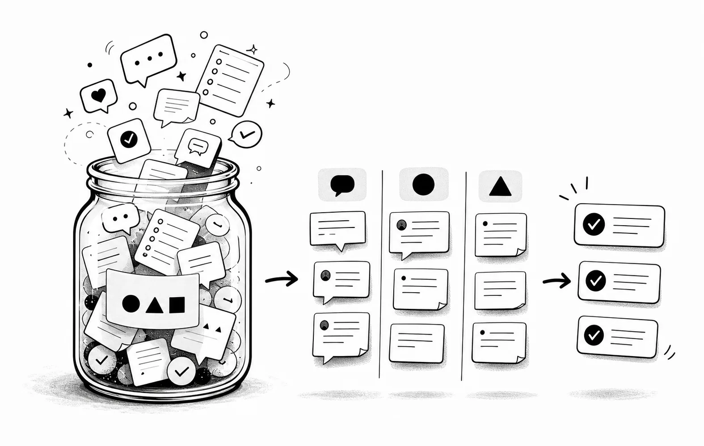

What I built
A feedback platform that centralised public-form submissions, organised customer comments and supported response workflows from one place.
A .NET and Vue application for collecting, managing and responding to customer feedback through configurable public-facing forms.
A feedback platform that centralised public-form submissions, organised customer comments and supported response workflows from one place.
Developed the .NET and Vue application, including configurable forms and follow-up workflows for managing submitted feedback.
Clean Architecture, RESTful APIs
Marketing website · single-page application · REST API server
Microsoft Azure
Helped organisations streamline follow-up and turn customer comments into actionable insights.
C# · ASP.NET Core Web API · Razor Pages · Vue.js · Tailwind CSS · Azure Cosmos DB · ASP.NET Core Identity · Azure SignalR Service · Azure Storage · Stripe API · Azure Front Door · MediatR
